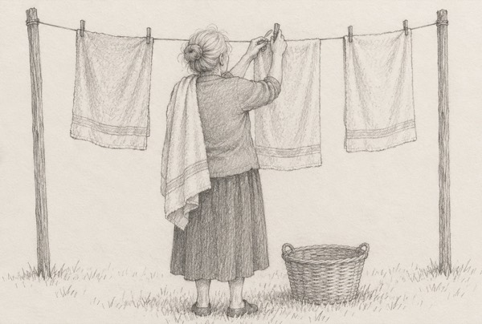

|
What gets wetter the more it dries?
Take a second. It sounds backwards.
A towel.
Nobody ever asks the towel how it’s doing.

Some women are towels. The kind ones, mostly.
They dry everyone else’s tears. And every time, they get a little wetter.
Maybe it’s him. You hear about his day, his boss, his bad back. You notice when he’s gone quiet. You always know what to say.
And somehow, by the time it’s your turn, the evening’s over.
Or maybe there’s no “him” right now. You’re the friend everyone calls when love goes wrong. You know all their exes by name.
And for some of us, it isn’t love at all. It’s the kids, or a mother who needs us every day.
Here’s why it’s so hard to see. Being the towel feels like love. Most of the time, it is. Nobody’s doing anything wrong.
And the better you are at it, the less anyone thinks to ask. A towel on a hook looks fine from the outside. Even when it’s soaked through.
So here’s one question to carry around today:
Who dries yours?
If a name came to you straight away, good. Hold on to that one.
If you had to stop and think, that’s worth noticing.
So how are you, really?
Evelyn, it’s my turn. Let me tell you how I really am →
Not “I’m fine.” Not the polite version you give at the door. The real one.
Tell me about him. Or about whoever leans on you most. All of it, in whatever order it comes out. You don’t have to be brief, or tidy, or brave about it.
We’ll look at it together: what you’ve been giving, and what’s been coming back.
Most of us were raised to be the towel. “Be useful. Be easy. Don’t make a fuss.”
So if you’ve stopped bringing up your own day, that makes sense. It’s an old habit, and a kind one.
And if you’re tired, that isn’t selfish. Drying everyone else’s tears is real work. Of course it wears you out.
First time here? I’ll cover your first 3 minutes.
Even a towel gets its turn on the line. So do you.
Take my turn talking to Evelyn →
— Evelyn
P.S. What gets wetter the more it dries? A towel. And now and then, a very kind woman. I’d like to hear how you really are. Start here.
|